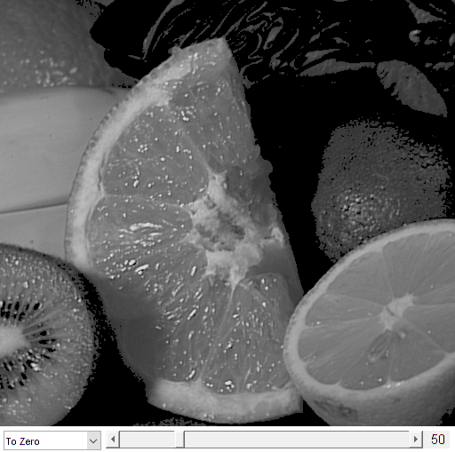

Threshold demo
Sample code that shows how to use the diverse threshold options offered by OpenCV.
In this sample you will learn how to perform basic thresholding operations using OpenCV function cv.threshold.
Sources:
function varargout = threshold_demo_gui(im) % load source image if nargin < 1 src = imread(fullfile(mexopencv.root(),'test','fruits.jpg')); elseif ischar(im) src = imread(im); else src = im; end % Convert the image to Gray if size(src,3) == 3 src = cv.cvtColor(src, 'RGB2GRAY'); end % create the UI h = buildGUI(src); if nargout > 0, varargout{1} = h; end end function onChange(~,~,h) %ONCHANGE Event handler for UI controls % retrieve current values from UI controls thresh = round(get(h.slid, 'Value')); tIdx = get(h.pop(1), 'Value'); set(h.txt, 'String',sprintf('%3d',thresh)); % type of Threshold max_BINARY_value = 255; types = {'Binary', 'BinaryInv', 'Trunc', 'ToZero', 'ToZeroInv', ''}; % apply thresholding if ~isempty(types{tIdx}) dst = cv.threshold(h.src, thresh, 'MaxValue',max_BINARY_value, ... 'Type',types{tIdx}); else dst = h.src; end % show result set(h.img, 'CData',dst); drawnow; end function h = buildGUI(img) %BUILDGUI Creates the UI % parameters thresh = 50; max_value = 255; sz = size(img); sz(2) = max(sz(2), 250); % minimum figure width % build the user interface (no resizing to keep it simple) h = struct(); h.src = img; h.fig = figure('Name','Threshold Demo', ... 'NumberTitle','off', 'Menubar','none', 'Resize','off', ... 'Position',[200 200 sz(2) sz(1)+29]); if ~mexopencv.isOctave() %HACK: not implemented in Octave movegui(h.fig, 'center'); end h.ax = axes('Parent',h.fig, 'Units','pixels', 'Position',[1 30 sz(2) sz(1)]); if ~mexopencv.isOctave() h.img = imshow(img, 'Parent',h.ax); else %HACK: https://savannah.gnu.org/bugs/index.php?45473 axes(h.ax); h.img = imshow(img); end h.pop = uicontrol('Parent',h.fig, 'Style','popupmenu', 'Value',4, ... 'Position',[5 5 110 20], ... 'String', {'Binary','Binary Inverted','Truncate','To Zero','To Zero Inverted','-None-'}); h.slid = uicontrol('Parent',h.fig, 'Style','slider', 'Value',thresh, ... 'Min',0, 'Max',max_value, 'SliderStep',[1 10]./(max_value-0), ... 'Position',[120 5 sz(2)-120-30-5 20]); h.txt = uicontrol('Parent',h.fig, 'Style','text', 'FontSize',11, ... 'Position',[sz(2)-30-5 5 30 20], 'String',num2str(thresh)); % hook event handlers, and trigger default start set([h.slid, h.pop], 'Callback',{@onChange,h}, ... 'Interruptible','off', 'BusyAction','cancel'); onChange([],[],h); end